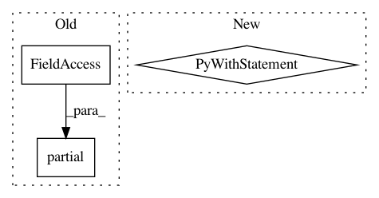

427bd0f33076c2595dceb0dfd5bca00a06f95498,src/python/pants/backend/jvm/tasks/jar_create.py,JarCreate,execute,#JarCreate#,121
Before Change
self.sourcejar(jar_targets(is_jvm_library), functools.partial(add_genjar, "source_jars"))
if self.jar_javadoc:
javadoc_add_genjar = functools.partial(add_genjar, "javadoc_jars")
self.javadocjar(jar_targets(is_java_library),
self.context.products.get("javadoc"),
javadoc_add_genjar)
self.javadocjar(jar_targets(is_scala_library),
After Change
for target in self.context.targets(is_jvm_library):
jar_name = jarname(target)
jar_path = os.path.join(self.workdir, jar_name)
with self.create_jar(target, jar_path) as jarfile:
if self._jar_builder.add_target(jarfile, target):
self.context.products.get("jars").add(target, self.workdir).append(jar_name)
@contextmanager
def create_jar(self, target, path):
existing = self._jars.setdefault(path, target)
if target != existing:
In pattern: SUPERPATTERN
Frequency: 3
Non-data size: 3
Instances
Project Name: pantsbuild/pants
Commit Name: 427bd0f33076c2595dceb0dfd5bca00a06f95498
Time: 2014-07-10
Author: john.sirois@gmail.com
File Name: src/python/pants/backend/jvm/tasks/jar_create.py
Class Name: JarCreate
Method Name: execute
Project Name: pantsbuild/pants
Commit Name: 93a66cae06444e5a2afdeaf81d41ae8b2671ff51
Time: 2020-05-22
Author: stuhood@gmail.com
File Name: tests/python/pants_test/backend/python/tasks/test_python_binary_integration.py
Class Name: PythonBinaryIntegrationTest
Method Name: test_zipsafe_caching
Project Name: ray-project/ray
Commit Name: 3c44c0d3e4b5b764ab993bca11a1c58f1e43ed2c
Time: 2020-12-10
Author: ed.nmi.oakes@gmail.com
File Name: python/ray/serve/tests/test_long_poll.py
Class Name:
Method Name: test_async_client